TRANSPARENT CYSTS
(1) SPHERICAL
| 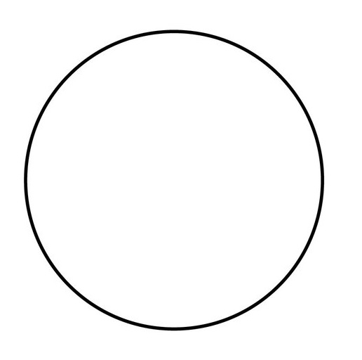 |
 Ataxodiniumchoane
Ataxodiniumchoane |
 Bitactetodiniumtepikiense
Bitactetodiniumtepikiense |
 Bitactetodiniumspongium
Bitactetodiniumspongium |
 Pyxidinopsispsilata
Pyxidinopsispsilata |
 Pyxidinopsisreticulata
Pyxidinopsisreticulata |
 Tectatodiniumpellitum
Tectatodiniumpellitum |
(2) SPHERICAL WITH PROCESSES
(2.1) HOLLOW PROCESSES
| 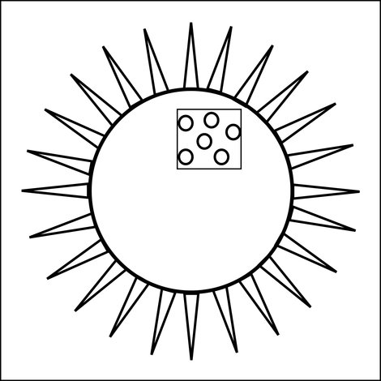 |
 Lingulodiniummachaerophorum
Lingulodiniummachaerophorum |
 Operculodiniumcentrocarpum
Operculodiniumcentrocarpum |
 Operculodiniumisraelianum
Operculodiniumisraelianum |
 Operculodiniumjanduchenei
Operculodiniumjanduchenei |
 Polysphaeridiumzoharyi
Polysphaeridiumzoharyi |
(2) SPHERICAL WITH PROCESSES
(2.1) SOLID PROCESSES
| 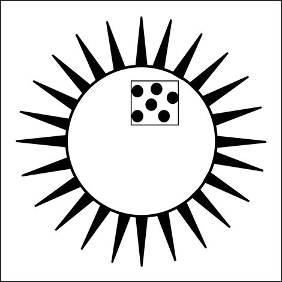 |
 Biecheleriabaltica
Biecheleriabaltica |
 Biecheleriacincta
Biecheleriacincta |
 Operculodiniumaguinawense
Operculodiniumaguinawense |
 Operculodiniumlongispinigerum
Operculodiniumlongispinigerum |
 Pentapharsodiniumdalei
Pentapharsodiniumdalei |
 Tuberculodiniumvancampoae
Tuberculodiniumvancampoae |
(2) SPHERICAL WITH PROCESSES
(2.3) DISTALLY CONNECTED
| 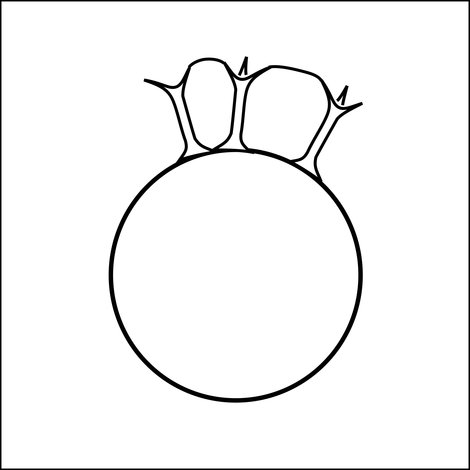 |
 Dalellachathamensis
Dalellachathamensis |
 Nematosphaeropsislabyrinthus
Nematosphaeropsislabyrinthus |
 Tuberculodiniumvancampoae
Tuberculodiniumvancampoae |
(3) PERIDINIOIDS
| 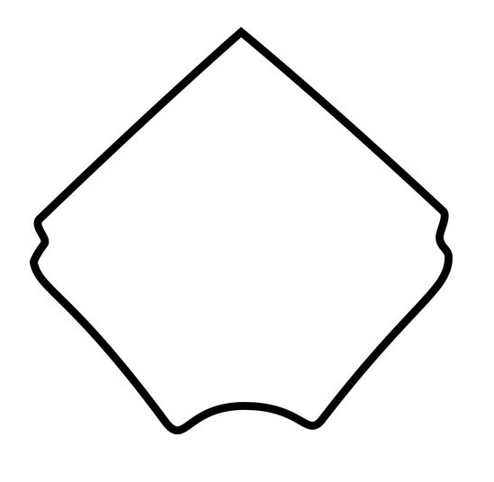 |
 Trinovantediniumapplanatum
Trinovantediniumapplanatum |
(4) PROCESSES ON TRIPLE JUNCTIONS AND CAN HAVE SEPTA ALONG SUTURES
(4.1) WITH ANTAPICAL PROTRUSION
| 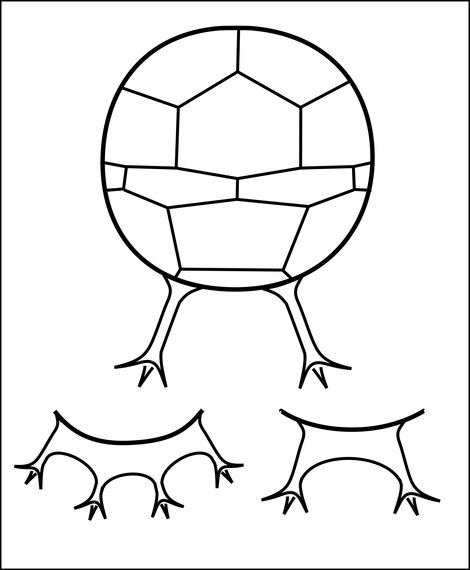 |
 Spiniferitesmembranaceous
Spiniferitesmembranaceous |
 Spiniferitesmirabilis
Spiniferitesmirabilis |
 Spiniferitespacificus
Spiniferitespacificus |
(4) PROCESSES ON TRIPLE JUNCTIONS AND CAN HAVE SEPTA ALONG SUTURES
(4.2) WITHOUT ANTAPICAL PROTRUSION
(4.2.1) WITH APICAL BOSS
| 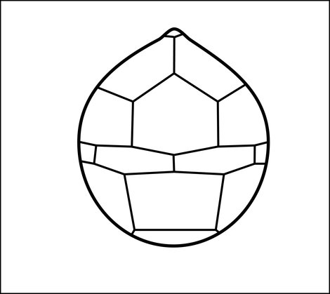 |
 Spiniferitesalaskensis
Spiniferitesalaskensis |
 Spiniferitesbelerius
Spiniferitesbelerius |
 Spiniferitesbentorii
Spiniferitesbentorii |
 Spiniferiteslazus
Spiniferiteslazus |
 Spiniferitesmultisphaerus
Spiniferitesmultisphaerus |
(4) PROCESSES ON TRIPLE JUNCTIONS AND CAN HAVE SEPTA ALONG SUTURES
(4.2) WITHOUT ANTAPICAL PROTRUSION
(4.2.2) WITHOUT APICAL BOSS
| 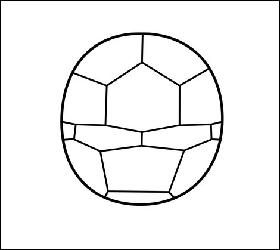 |
 Spiniferitespachydermus
Spiniferitespachydermus |
 Spiniferitesramosus
Spiniferitesramosus |
 Spiniferiteshyperacanthus
Spiniferiteshyperacanthus |
 Spiniferitesdelicatus
Spiniferitesdelicatus |
(4) PROCESSES ON TRIPLE JUNCTIONS AND CAN HAVE SEPTA ALONG SUTURES
(4.3) DISTALLY CONNECTED PROCESSES
| 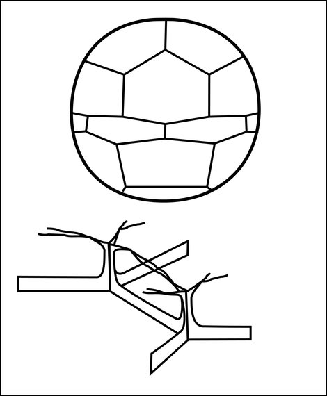 |
 Dalellachathamensis
Dalellachathamensis |
 Nematosphaeropsislabyrinthus
Nematosphaeropsislabyrinthus |
 Nematosphaeropsisrigida
Nematosphaeropsisrigida |
(4) PROCESSES ON TRIPLE JUNCTIONS AND CAN HAVE SEPTA ALONG SUTURES
(4.4) ELONGATE OR CRUCIFORM SHAPE
| 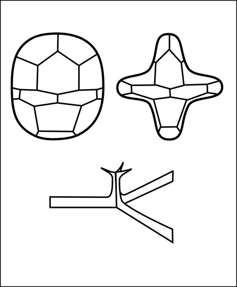 |
 Spiniferitescruciformis
Spiniferitescruciformis |
 Spiniferiteselongatus
Spiniferiteselongatus |
 Spiniferitesfrigidus
Spiniferitesfrigidus |
(5) NO PROCESSES ON TRIPLE JUNCTIONS AND CAN HAVE SEPTA ALONG SUTURES
(5.1) SHORT PROCESSES
| 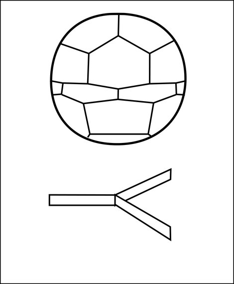 |
 Impagidiniumpallidum
Impagidiniumpallidum |
 Impagidiniumparadoxum
Impagidiniumparadoxum |
 Impagidiniumpatulum
Impagidiniumpatulum |
 Impagidiniumplicatum
Impagidiniumplicatum |
 Impagidiniumsphaericum
Impagidiniumsphaericum |
(5) NO PROCESSES ON TRIPLE JUNCTIONS AND CAN HAVE SEPTA ALONG SUTURES
(5.2) INTERMEDIATE PROCESSES
| 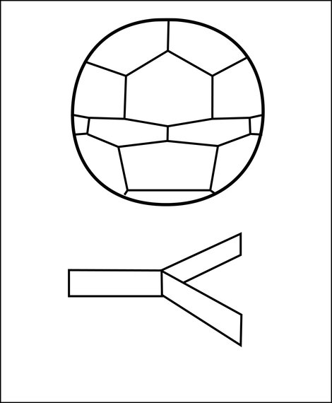 |
 Impagidiniumparadoxum
Impagidiniumparadoxum |
 Impagidiniumstrialatum
Impagidiniumstrialatum |
 Impagidiniumvelorum
Impagidiniumvelorum |
(5) NO PROCESSES ON TRIPLE JUNCTIONS AND CAN HAVE SEPTA ALONG SUTURES
(5.3) VARIABLE PROCESSES
| 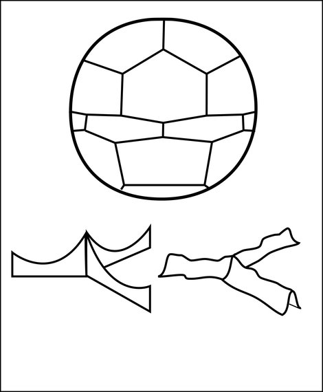 |
|
Impagidiniumvelorum |